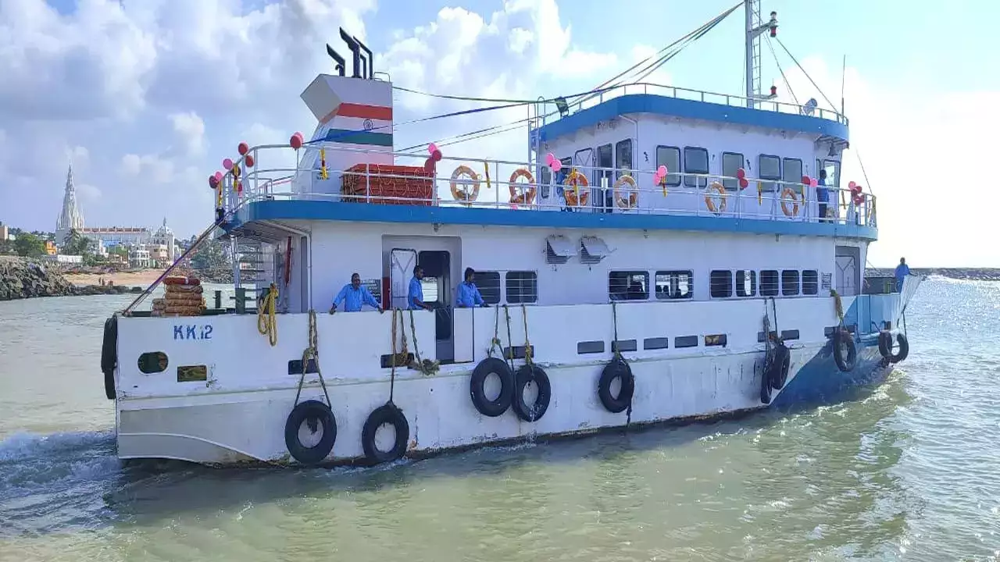

Boating

About Boating
- Scenic Boat Rides:Boating in Kanyakumari offers visitors a unique perspective of the town's stunning coastal landscape. Tourists can embark on boat rides along the coastline, providing panoramic views of the Arabian Sea, Bay of Bengal, and Indian Ocean. The boat rides often pass by iconic landmarks such as the Vivekananda Rock Memorial and Thiruvalluvar Statue, allowing travelers to admire these structures from the water.
- Sunset and Sunrise Views: One of the highlights of boating in Kanyakumari is the opportunity to witness mesmerizing sunrise and sunset views from the sea. As the boat glides along the water, passengers can experience the magical moments when the sun dips below the horizon, painting the sky in vibrant hues of orange and pink. These scenic boat rides offer a serene and unforgettable experience for visitors.
- Exploring Nearby Islands: Kanyakumari is surrounded by several small islands and rock formations that are accessible by boat. Tourists can opt for island-hopping tours, where they can explore these picturesque islands, each with its own unique charm and natural beauty. Some popular islands to visit include the Vivekananda Rock, which houses the Vivekananda Rock Memorial, and the nearby Thiruvalluvar Statue island.
- Dolphin Spotting:Another exciting activity during boat rides in Kanyakumari is dolphin spotting. The waters around Kanyakumari are home to various species of dolphins, and tourists have the opportunity to catch glimpses of these playful creatures swimming alongside the boats. Many boat operators offer dolphin-watching tours, allowing visitors to witness these marine mammals in their natural habitat.
- Ferry Services:Kanyakumari offers ferry services that cater to different preferences and budgets. From large motorized boats to smaller traditional wooden boats, tourists can choose the type of vessel that suits their needs. Additionally, there are guided boat tours available, providing informative commentary about the history, culture, and significance of the landmarks seen along the way. These ferry services make boating accessible to visitors of all ages and interests, ensuring a memorable experience for everyone.